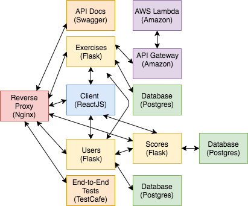

class: center, middle # Dockerizing a React App `Two tips for making your life easier`<br> `when using Create React App`<br> `with Docker` <br><br> <img src="images/react.png" alt="react logo" style="width:60px;padding-bottom:10px;"> <img src="images/docker-logo.png" alt="docker logo" style="width:100px;"> <br><br><br> <small>Presented by *Michael Herman*</small> --- ## About Michael ``` $ whoami michael.herman ``` -- #### Day Job: Software Engineer at [ClickFox](https://www.clickfox.com/). <img src="images/clickfox.png" style="max-width: 4%; border:0; box-shadow: none;" alt="clickfox logo"> -- #### Docker: 1. Avid Docker user since 2014. 1. Last year I architected and set up [On-Demand Environments With Docker and AWS ECS](http://mherman.org/blog/2017/09/18/on-demand-test-environments-with-docker-and-aws-ecs/). -- #### Also: 1. Co-founder/author of [Real Python](https://realpython.com) 1. 😍 - [tech writing/education](http://mherman.org), [open source](http://github.com/mjhea0), [financial models](http://www.starterfinancialmodel.com/), [radiohead](http://radiohead.com/) <img src="images/me.png" style="max-width: 10%; border:0; box-shadow: none; padding-top:10px" alt="me"> --- ## Why Docker? -- Docker is a technology that *can* help to speed up the development and deployment processes. -- For example, if you’re working with microservices, Docker helps link together small, independent services. It also can eliminate environment-specific bugs since you can replicate your prod environment locally. <div>  </div> --- ## Project Overview Generate a new project with [Create React App](https://github.com/facebookincubator/create-react-app), and add a *Dockerfile*: ```sh # base image FROM node:9.2 # set working directory RUN mkdir /usr/src/app WORKDIR /usr/src/app # add `/usr/src/app/node_modules/.bin` to $PATH ENV PATH /usr/src/app/node_modules/.bin:$PATH # install and cache app dependencies ADD package.json /usr/src/app/package.json RUN npm install RUN npm install react-scripts@1.0.17 -g # start app CMD ["npm", "start"] ``` Spin up the container: ```sh $ docker build -t sample-app . $ docker run -it -v ${PWD}:/usr/src/app -p 3000:3000 --rm sample-app ``` --- ## Tip 1: Use a *.dockerignore* file! -- **Why?** 1. Decrease the *image size* - only send what's necessary to the Docker daemon 1. Prevent unneceesary *cache invalidation* 1. More *secure* - ignore sensitive secrets -- **How?** Add a .*dockerignore*: ```sh .git build/ node_modules/ all_my_secrets.env ``` -- **Results?** | | Execution Time | Size | |----------|-----------------|---------| | *Before* | 2 mins, 17 secs | 150.7MB | | *After* | 1 min, 42 secs | 137.7kB | <small><em>Images were built from scratch, without using Docker cache.</em></small> --- ## Tip 2: Use Polling with Docker Machine To get hot-reloading to work with [Docker Machine](https://docs.docker.com/machine/) and [VirtualBox](https://docs.docker.com/machine/get-started/) you’ll need to enable a polling mechanism via [chokidar](https://github.com/paulmillr/chokidar) (which wraps `fs.watch`, `fs.watchFile`, and `fsevents`). -- To enable polling, you need to add an environment variable: ```sh $ docker run -it -v ${PWD}:/usr/src/app -p 3000:3000 \ -e CHOKIDAR_USEPOLLING=true --rm sample-app ``` -- Using Docker Compose? ```yaml version: '3.3' services: sample-app: container_name: sample-app build: . volumes: - '.:/usr/src/app' ports: - '3000:3000' environment: - NODE_ENV=development - CHOKIDAR_USEPOLLING=true ``` --- ### That's it! -- 1. Blog Post - [Dockerizing a React App](http://mherman.org/blog/2017/12/07/dockerizing-a-react-app) (check out the [Reddit discussion](https://www.reddit.com/r/reactjs/comments/7i9ne2/dockerizing_a_react_app/) as well) 1. Interested in learning more about React + Docker + a bunch of microservices - ***[Testdriven.io](http://testdriven.io/)***: <div text-align="center"> <img src="images/cover_small.png" style="max-width: 40%; border:2px solid; border-color:grey; box-shadow: none;" alt="microservice tech"> </div>